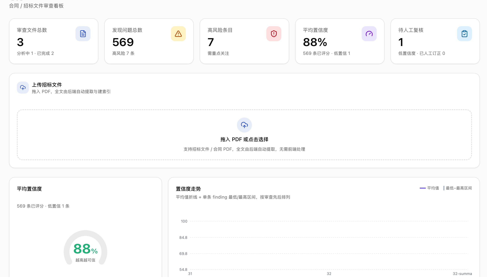
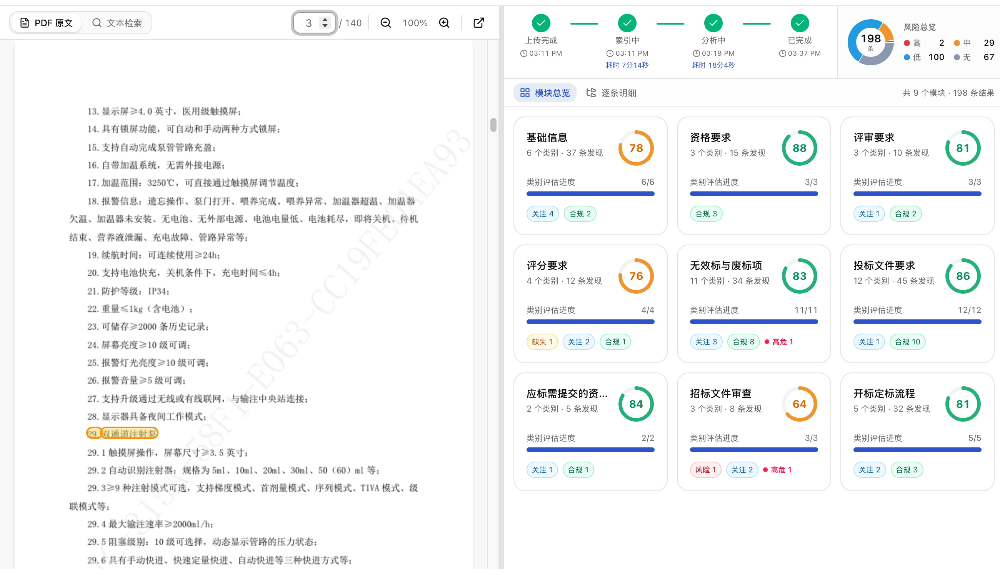
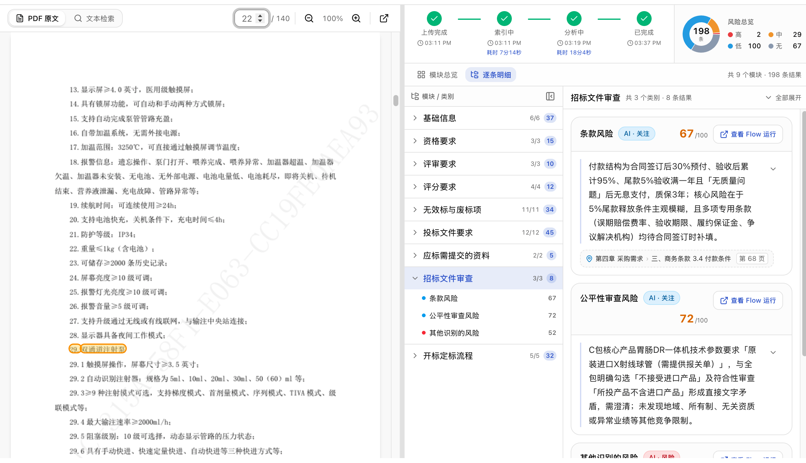
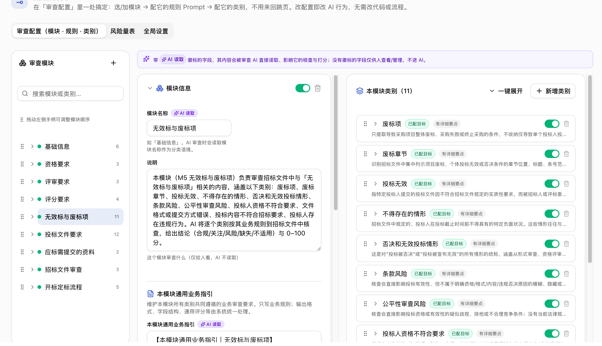

审查范围广且容易遗漏
一份文件同时包含资格、评分、废标、格式、技术、商务和合同要求；人工线性阅读难以稳定覆盖全部类别和交叉矛盾。
01 / 业务挑战
招标与合同文件往往包含上百页正文、附件和交叉引用，审查人员需要在资格要求、评分规则、废标条件、技术参数、商务条款和合同风险之间反复核对。不同专家依赖各自经验和检查表，结果难统一、进度难追踪、原文难回溯。业务需要扩大首轮筛查覆盖，同时保留专业人员对风险判断和最终发布的责任。
一份文件同时包含资格、评分、废标、格式、技术、商务和合同要求；人工线性阅读难以稳定覆盖全部类别和交叉矛盾。
检查表、风险口径和专业经验散落在个人文档与历史项目中；规则更新后难以保证所有审查人员使用同一版本。
摘要和问题清单常缺少章节、页码和原文摘录；复核人需要重新搜索整份文件，解释和交接成本较高。
文件是否完成索引、哪些类别尚未审查、哪次 AI 调用失败以及谁修改了结论，通常缺少统一状态和审计入口。
02 / 期望目标与收益
方案目标不是让 AI 独立决定是否投标，而是让系统先完成可重复的文档处理和分类筛查，为专业人员准备结构化审查包。目标结果包括统一审查覆盖、缩短定位原文的时间、让风险优先级可见、把规则从个人经验沉淀为可维护配置，并让每次运行、重试和人工订正都有记录。实际收益需通过客户基线和试点数据验证，不预设未经测量的 ROI。
每份文件按同一模块、类别和检查标准执行首轮审查，减少因人员经验差异造成的覆盖波动。
每条结论同时给出原文摘录、章节、页码和定位锚，复核人从风险清单直接回到文件上下文。
风险等级与置信度分开呈现，高风险、低置信和跨章节冲突优先进入专业复核。
看板展示文件状态、类别进度、人工订正和异常恢复，管理者可以按统一口径跟踪处理质量与运行健康。
03 / 端到端业务闭环
用户只需提交 PDF 和项目基本信息。系统在后台完成全文提取、知识索引和分类审查，业务人员在结果工作台查看模块总览、风险分布和类别结论，专业复核人对照原文确认或订正。配置管理员维护审查目录与评分标准，运营人员通过 Trace 和 Watchdog 处理异常。
上传招标或合同 PDF，填写项目名称和编号；系统生成唯一审查记录并进入处理队列。
后台提取全文与页数，把 PDF 和纯文本保存到受控文档库，并确认审查 Agent 已能检索内容。
系统按启用的模块和类别执行检查，分别形成类别结论、合规健康分和具体 findings。
工作台左侧呈现 PDF 与全文搜索，右侧呈现模块、类别、风险和原文定位，支持从 finding 直接跳转证据。
高风险和低置信结果优先进入复核；人员修改标题、描述或风险理由时，系统保留改前、改后、人员和时间。
看板跟踪风险、置信度和人工订正；Trace 记录每次调用，Watchdog 恢复卡住类别，真实 prompt 可回放测试。




| 信息 | 回答的问题 | 给复核人的价值 |
|---|---|---|
| 类别结论 | 这个审查类别是合规、关注、风险、缺失还是不适用？ | 先看结论和事实摘要，再按需展开细节 |
| 风险与置信度 | 潜在后果有多严重？当前判断有多确定？ | 把高风险和低置信项优先交给专家 |
| 原文证据 | 结论对应哪段原文、章节和页码？ | 减少重复搜索，保持结论可解释 |
| 评分依据 | 为什么给出这个类别得分、风险和置信度？ | 支持复核、校准和规则迭代 |
| 人工订正记录 | 谁在何时修改了哪个字段，修改前后是什么？ | 保留专业判断，形成可审计的学习数据 |
04 / 解决方案架构
体验层使用 Dynamics 365 或 Power Apps 承载上传、审查、人工复核、配置和运营；Agentic 编排层由 Copilot Studio RFP Reviewer 与 Copilot Studio Workflow 组成，Workflow 负责文档处理、知识就绪检查、49 类并行审查、Human-in-the-Loop 和异常恢复；数据与知识层使用 Dataverse 保存业务记录，并以 SharePoint 保存原始文件和企业知识。Microsoft Entra ID、DLP、Solution 与可观测性横向治理三层。[1][2][3][4][8][9]
提供上传、总览、审查列表、原文对照、配置和运营入口
业务人员确认、订正或退回高风险和低置信结果，保留最终责任
按类别检索企业知识，生成结论、事实摘要、findings、风险与置信度
执行文档处理、知识就绪、类别派发、结构化落表、Human-in-the-Loop、Trace 与恢复
保存 RFP、审查目录、类别结果、findings、配置、订正与运行记录
保存原始 PDF 与企业文档，为 Agent 提供受控知识检索
05 / 关键组件介绍
方案避免把所有逻辑放进一个 Agent。Dynamics 365 / Power Apps 负责业务体验；RFP Reviewer 负责基于证据的生成式审查；Copilot Studio Workflow 负责文档处理、规则执行、Human-in-the-Loop 和恢复；Dataverse 与 SharePoint 保存权威业务记录和企业知识。客户只需管理应用用户许可与 Copilot Credits 两类商业配置。
| 组件 | 主要职责 | 客户可见能力 | 控制边界 |
|---|---|---|---|
| Dynamics 365 / Power Apps 体验 | 统一业务交互、数据展示与人工复核 | 上传、看板、结果页、原文对照、配置与运营 | 不承担 Agent 推理或后台编排 |
| Copilot Studio RFP Reviewer | 按类别检索证据并生成结构化建议 | 类别结论、事实摘要、findings、风险与置信度 | 不能代替专业人员发布结论 |
| Copilot Studio Workflow | 管理文档处理、状态、并行任务、Human-in-the-Loop、Trace 与恢复 | 进度可见、Workflow run 可追踪、卡住类别可重跑 | 确定性执行，不拥有业务风险定义 |
| Dataverse + SharePoint | 保存业务记录、配置、订正、审计与企业知识 | 统一规则、原文证据、低置信队列和改前改后留痕 | 按角色、项目和文档库配置最小权限 |
每个类别拥有独立结果记录和 Workflow run，单一类别卡住时不需要重跑整份文件；恢复 Workflow 取消旧运行并有限重试，同时把扫描、重跑和放弃数量写入运营记录。
幂等键至少包含文档版本、类别和规则版本；后到的重复运行不得覆盖已人工订正的结果。
达到上限后进入人工异常队列，并停止自动调用，避免持续成本和重复告警。
记录触发原因、输入版本、运行 ID、输出哈希和最终采用结果，便于排查模型、连接器或配置问题。
06 / 所需产品配置
第一类是 Dynamics 365 或 Power Apps，用于业务应用、Dataverse 数据、用户访问和平台治理；第二类是 Copilot Studio Credits，用于 RFP Reviewer、Copilot Studio Workflow、文档处理、AI tools、Workflow actions 和知识检索。Copilot Studio 中的内容处理按页消耗 8 Copilot Credits，Workflow actions 每 100 个动作消耗 13 Copilot Credits；正式配置按月文档数、平均页数、49 类审查动作和重试率测算。[1][8][9] SharePoint Online 作为客户现有 Microsoft 365 企业知识来源，不单列为本方案新增许可。
提供业务应用、Dataverse、Entra 登录、角色权限、DLP、Solution、环境与 ALM。已有适用 Dynamics 365 用户可沿用其应用上下文；其他用户配置 Power Apps Premium。[1][8]
统一覆盖 Agent、Copilot Studio Workflow、文档处理、AI tools、知识检索和 Workflow actions。试点可使用 PAYG，稳定后根据实测月用量选择预付 Credits 或继续 PAYG。[2][9]
| 配置项 | 生产基线 | 容量驱动因素 |
|---|---|---|
| Dynamics 365 / Power Apps | 使用客户已有适用 Dynamics 365 权益，或为 Code App 用户配置 Power Apps Premium；Dataverse、治理和环境能力随应用平台配置 | 月活用户数、角色数量、现有 Dynamics 365 / Power Apps 权益、数据与文件保留量 |
| Copilot Studio Credits | 试点优先 PAYG；生产按 Agent actions、Workflow actions、文档处理页数、AI tool tokens 与重试量选择预付或 PAYG | 月文档数 × 平均页数 × 8 Credits/页；49 类 Workflow 动作量；Agent/AI tool 用量与异常重试率 |
07 / 方案预期获益
预期获益来自流程重构，而不是模型单点能力：统一目录提高首轮覆盖一致性，证据直达减少原文定位工作，风险与置信度分流让专家先处理更需要判断的事项，配置和运行记录让规则、质量与异常可持续管理。所有收益应在同类型文档、同一审查目录和相同风险范围下建立人工基线，并通过受控试点验证。
每份文件按同一模块、类别和风险规则执行，预期减少因审查人不同造成的检查项遗漏和口径波动。
系统预先组织结论、事实摘要和原文位置，专业人员把时间用于判断与沟通，而不是重复翻页和制作问题清单。
风险等级、置信度和跨章节证据让团队优先澄清废标条件、关键缺失、异常责任和互相冲突的要求。
规则、prompt、运行、订正和恢复记录进入统一平台，支持规则版本管理、质量复盘、责任追踪和持续优化。
| 收益维度 | 建议指标 | 对照方法 |
|---|---|---|
| 审查覆盖 | 人工 gold 中被系统发现的适用问题占比；按风险等级拆分 | 同一文档、同一目录，对比人工基准与 AI+人工结果 |
| 主动处理时间 | 从开始审查到形成可提交问题清单的有效分钟数中位数 | 按页数区间和风险复杂度匹配前后样本 |
| 证据定位效率 | 复核人从 finding 打开正确原文所需时间与成功率 | 抽样记录点击到确认原文的用时 |
| 风险响应 | 高风险事项从发现到责任人处置的中位时长 | 统一风险定义后比较试点前后 |
| 治理透明度 | 具备原文、运行、规则版本和人工订正记录的 findings 占比 | 按月审计完整记录率和异常关闭率 |
08 / 实施路线与验证
现有平台已经具备完整链路，客户项目可以直接进入业务适配与受控试点，而不必重新搭建概念验证。实施重点是把客户审查目录、风险规则、用户角色、文档库和许可容量配置到目标环境，并用客户历史样本建立质量和效率基线。每个阶段都有退出条件；质量、权限或运行可靠性未达标时不扩大范围。
选择一个文档类型、一个责任团队和 20–30 份已完成人工审查的样本；确认审查目录、风险口径、用户角色、保留要求和人工处理时间基线。
部署 Solution，配置 SharePoint、连接引用、服务身份、许可与容量；导入客户规则并对历史样本运行，逐条比较证据、结论、风险和遗漏。
限定到一个团队和明确文档范围，所有 AI 结果先经人工复核；每日处理异常，每周复盘质量、采用、处理时间和 credits 消耗，保留原流程回退。
质量、权限、恢复和容量门通过后，再按文档类型或组织范围逐步扩大；持续抽样高置信结果，版本化规则并按月审查单位成本与收益。
真实回归已经验证 140 页、49 类别和 198 findings 的完整链路；独立质量裁决也显示当前结果仍需专业人员把关。以下数字来自不同样本，只用于定义上线边界，不合并成营销总分。
| 指标 | 当前代码证据 | 下一门槛 |
|---|---|---|
| 完成状态完整性 | 一例 42002 仅完成 48/49；另一例 49/49 E2E PASS | 任何 42002 都必须同时满足 49/49 和零 pending |
| finding 准确率 | 181 条逐条裁决样本为 74.9% | 按业务风险偏好设门，并对高风险项要求更高下限 |
| 内容 / 严格类别召回 | 内容召回 91.0%；严格类别召回 63.3% | 保持内容召回，同时显著提高类别主归属 |
| 证据可定位性 | 三文档不计页码口径为 97.2% / 99.8% / 96.3%；单文档页码正确率曾为 82.1% | 锚文本命中与页码准确分别统计，不能互相替代 |
| 跨类别重复率 | 31 号逐条裁决样本为 15.5% | 引入主归属与引用关系后按同口径下降 |
| 人工与权限闭环 | 修改留痕已实现；正式处置枚举、发布状态和角色验收未完成 | 四角色权限测试通过，所有高风险和低置信项有处置记录 |
09 / 参考资料
当前实现事实来自 ContractReview-CodeApp main 分支源码、现有工作流定义、生成模型、测试资产与 PROJECT_STATUS；运行体验来自 2026-07-29 对已共享 Power Apps 的逐页操作。[6][7] 产品能力边界引用 Microsoft 官方资料。仓库中的项目名称、业务条款和环境标识未在正文展开。质量数字均保留原测量样本和口径，不跨样本合并。